Enhancing Universal Windows Platform (UWP) Apps with Cortana
Overview
In a famous scene from the movie Star Trek IV: The Voyage Home, chief engineer Scotty attempts to talk to a vintage PC. When the computer fails to respond, Scotty is handed a mouse — whereupon he holds the mouse like a microphone and says "Hello, computer."
Voice input and output, once considered a novelty in computer applications, are becoming more commonplace every day. That is the driving principle behind voice and speech APIs in the Universal Windows Platform (UWP), which, combined with Microsoft Cortana, provides a robust, extensible framework for building apps that react to voice commands and respond in kind with vocalizations of their own. Incorporating voice and speech in your apps is good not only for usability, but for accessibility as well.
In this lab, you will use Visual Studio 2017 to create a UWP app named Factoid that integrates with Cortana to present users with random, interesting facts, and that incorporates voice commands and speech synthesis to interact with users as naturally as they interact with each other.
Objectives
In this hands-on lab, you will learn how to:
- Create a Universal Windows Platform (UWP) app
- Integrate Cortana voice commands
- Incorporate speech synthesis
- Create a UWP service
- Utilize Cortana's "Personal Assistant" capabilities in an app
Prerequisites
The following are required to complete this hands-on lab:
- Windows 10
- Visual Studio Community 2017 or higher
- The Visual Studio 2017 .NET desktop development workload
- The Visual Studio 2017 Universal Windows Platform development workload
- A microphone and speaker connected to your PC
Exercises
This hands-on lab includes the following exercises:
Estimated time to complete this lab: 60 minutes.
Exercise 1: Create a Universal Windows Platform app
Creating a Universal Windows Platform (UWP) app is quick and easy using the built-in templates that ship with Visual Studio 2017. In this exercise, you will use Visual Studio 2017 to create a UWP app with custom branding to serve as a platform for subsequent exercises.
-
Start the Visual Studio installer. (An easy way to do that is to press the Windows key, type "installer," and select Visual Studio Installer from the menu.) Click the Modify button to view a list of installed components. Under "Workloads," make sure Universal Windows Platform development and .NET desktop development are checked. If they are not, check them and allow the installer to add these workloads.

Installing the UWP and .NET development workloads
-
Close the installer. Then start Visual Studio 2017 use the File -> New -> Project command to create a new Visual C# Blank App (Universal Windows) solution named "Factoid."
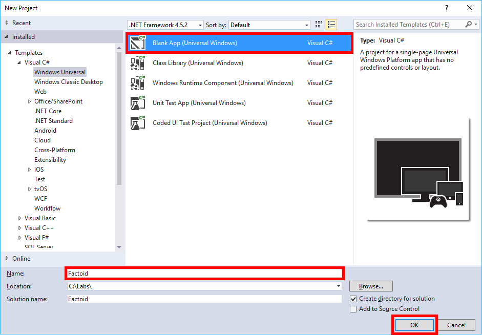
Creating a new UWP solution
-
When prompted to choose target and minimum platform requirements, accept the defaults and click OK.

Specifying the platform versions
-
Go to Solution Explorer and review the files and folders created for the solution, taking special notice of the "Assets" folder and the Package.appxmanifest file.
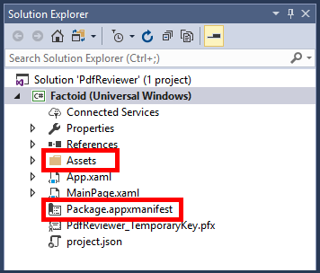
The new UWP solution
-
Next, you will add custom images to the project and update Package.appxmanifest to references those images and apply custom branding. In Solution Explorer, right-click the project's "Assets" folder and select Add -> Existing Item....
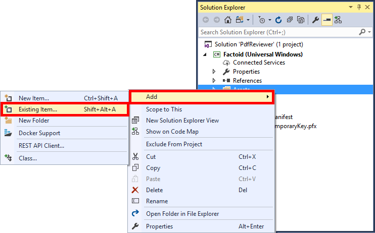
Adding items to the "Assets" folder
-
In the "Add Existing Item" dialog, browse to the "Assets" folder in the "Resources" folder that accompanies this lab. Select all of the files in the "Assets" folder and click Add.
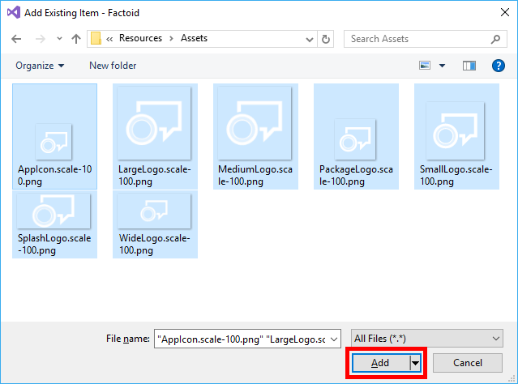
Adding images to the "Assets" folder
-
In Solution Explorer, double-click Package.appxmanifest to open it for editing. This file, known as the "app manifest," contains information about the app regarding images, display names, permissions, and capabilities.
-
Select the Visual Assets tab and ensure that All Visual Assets is selected on the left. These settings control the images, icons, and background colors used for the app's icons, logos, and splash screen.
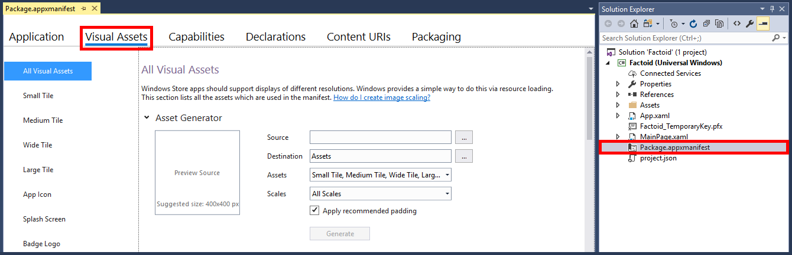
Viewing visual assets
-
Scroll down to "Display Settings" and enter the hexadecimal color value #298FCC for both Tile background and Splash screen background.
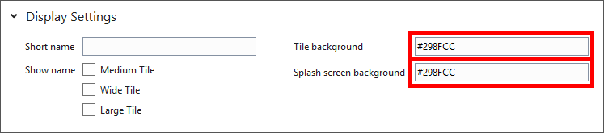
Updating the tile and splash-screen background colors
-
Scroll down to "Preview Images." Type "Assets\SmallLogo.png" into the Small Tile box. Confirm that a thumbnail image appears below.
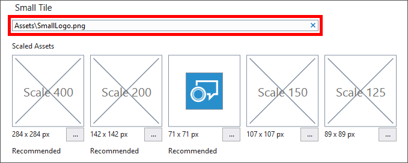
Updating the small-tile image
You can optionally provide small-tile images of various resolutions to make tiles created for your app look great on different devices. The Universal Windows Platform is smart enough to determine which image to display based on the screen resolution. If you provide only one image, Windows automatically scales it up and down as needed.
-
Scroll down to Medium Tile and enter "Assets\MediumLogo.png" into the box.
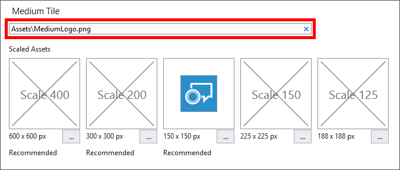
Updating the medium-tile image
-
Scroll down to Wide Tile and enter "Assets\WideLogo.png" into the box.
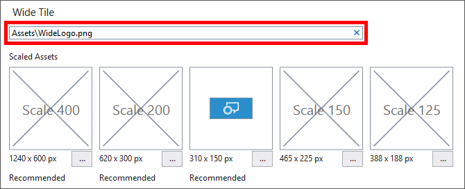
Updating the wide-tile image
-
Repeat the previous steps to enter the following values for the following assets:
- For Large Tile, enter "Assets\LargeLogo.png"
- For App Icon, enter "Assets\AppIcon.png"
- For Splash Screen, enter "Assets\SplashLogo.png"
- For PackageLogo, enter "Assets\PackageLogo.png"
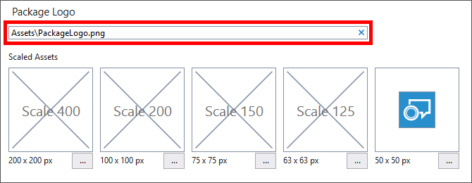
Updating the package logo
-
Next, you will import a NuGet package that simplifies the handling of JSON data. In Solution Explorer, right-click References and select Manage NuGet Packages... from the context menu.

Managing NuGet packages
-
Make sure Browse is selected in the NuGet Package Manager. Then select the Newtonsoft.Json package and click Install to install the latest stable version. If prompted to review changes, click OK.
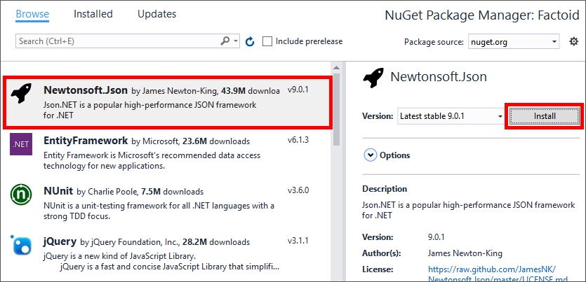
Installing JSON.NET
Key elements of the app are now in place, including images for custom branding and a library to simplify dealing with JSON data. The next step is to write some code.
Exercise 2: Add common logic, models, and UI controls
In most apps, but especially in a UWP app, it's helpful to write code that is centralized and shared by other parts of the app. As a best practice, the Model-View-ViewModel (MVVM) pattern is recommended for UWP apps. Implementing MVVM means creating pages ("views") to provide the visual experience, models to define the structure of data, and one or more view-models to connect views to models and manage the user experience. In this exercise, you will add a model and a view-model to the app. You will also begin crafting a user experience by adding controls to the app's UI.
-
In Solution Explorer, right-click the Factoid (Windows Universal) project and use the Add -> New Folder command to add a folder named "Common" to the project.
-
Repeat this process to add folders named "Helpers," "Models," and "ViewModels" to the project.
-
Right-click the "Common" folder and select Add -> Existing Item.... Browse to the "Resources\Common" folder included with this lab, select all of the files in that folder, and click Add to import the files into the project's "Common" folder.
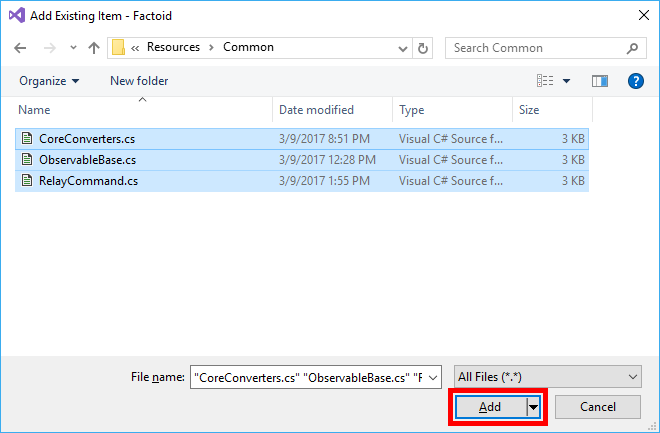
Importing files into the "Common" folder
-
Right-click the "Helpers" folder and use the Add -> Class command to add a class file named FactHelper.cs to the folder.
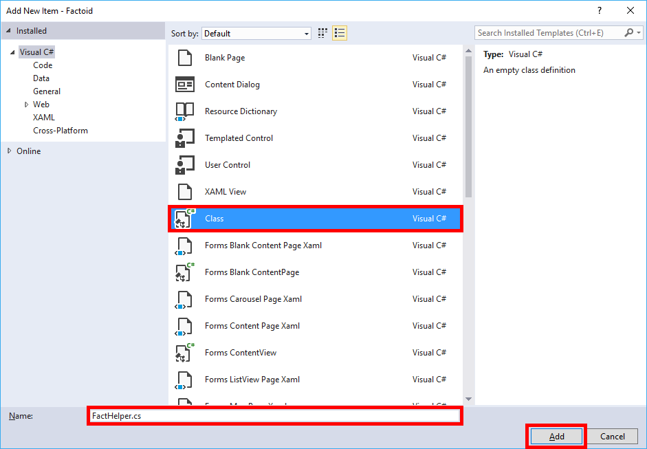
Adding the FactHelper class
-
Replace the contents of the file with the following code:
using Newtonsoft.Json;
using System;
using System.Collections.Generic;
using System.Linq;
using System.Net.Http;
using System.Runtime.Serialization.Json;
using System.Text;
using System.Threading.Tasks;
namespace Factoid.Helpers
{
public static class FactHelper
{
public async static Task<string> GetFactAsync()
{
string fact = null;
using (HttpClient client = new HttpClient())
{
var response = await client.GetStringAsync(new Uri("https://traininglabservices.azurewebsites.net/api/Facts/1"));
fact = JsonConvert.DeserializeObject<string>(response);
}
return fact;
}
}
}The GetFactAsync method calls an external Azure App Service to retrieve a random fact for the app to display.
-
Right-click the "Models" folder and use the Add -> Class command to add a class file named FactInformation.cs. Then replace the contents of the file with the following code:
using Factoid.Common;
using System;
using System.Collections.Generic;
using System.Linq;
using System.Text;
using System.Threading.Tasks;
using System.Windows.Input;
namespace Factoid.Models
{
public class FactInformation : Common.ObservableBase
{
private Guid _id;
public Guid Id
{
get { return this._id; }
set { this.SetProperty(ref this._id, value); }
}
private string _label;
public string Label
{
get { return this._label; }
set { this.SetProperty(ref this._label, value); }
}
private bool _isFavorite;
public bool IsFavorite
{
get { return this._isFavorite; }
set { this.SetProperty(ref this._isFavorite, value); }
}
}
}
-
Right-click the "ViewModels" folder and use the Add -> Class command to add a class file named MainViewModel.cs. Then replace the contents of the file with the following code:
using Factoid.Models;
using System;
using System.Collections.Generic;
using System.Collections.ObjectModel;
using System.Linq;
using System.Text;
using System.Threading.Tasks;
namespace Factoid.ViewModels
{
public class MainViewModel : Common.ObservableBase
{
public MainViewModel()
{
this.AllFacts = new ObservableCollection<FactInformation>();
}
private ObservableCollection<FactInformation> _allFacts;
public ObservableCollection<FactInformation> AllFacts
{
get { return this._allFacts; }
set { this.SetProperty(ref this._allFacts, value); }
}
private FactInformation _currentFact;
public FactInformation CurrentFact
{
get { return this._currentFact; }
set { this.SetProperty(ref this._currentFact, value); }
}
public async void LoadFactsAsync()
{
for (int i = 0; i <= 10; i++)
{
var fact = await Helpers.FactHelper.GetFactAsync();
this.AllFacts.Add(new FactInformation() { Id = Guid.NewGuid(), IsFavorite = false, Label = fact });
}
}
public async void LoadFactAsync()
{
var fact = await Helpers.FactHelper.GetFactAsync();
this.CurrentFact = new FactInformation() { Id = Guid.NewGuid(), IsFavorite = false, Label = fact };
}
}
}
-
In Solution Explorer, open App.xaml and locate the closing </Application> tag
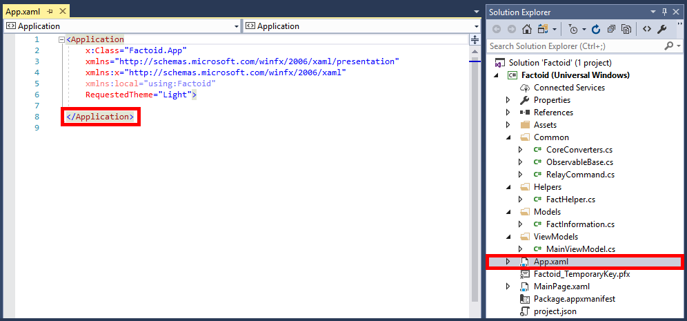
Locating the closing Application tag
-
Add the following statements directly above the closing tag:
<Application.Resources>
<ResourceDictionary>
<Color x:Key="AppMainAccentColor">#FF298FCC</Color>
<local:HasContextToEnabledConverter x:Key="HasContextToEnabledConverter" />
<local:IsFavoriteBackgroundConverter x:Key="IsFavoriteBackgroundConverter" />
<local:IsFavoriteThemeConverter x:Key="IsFavoriteThemeConverter" />
<local:FavoriteSymbolConverter x:Key="FavoriteSymbolConverter" />
<local:FavoriteLabelConverter x:Key="FavoriteLabelConverter" />
</ResourceDictionary>
</Application.Resources>
-
Open App.xaml.cs and add the following line of code to the App class:
public static ViewModels.MainViewModel ViewModel = new ViewModels.MainViewModel();
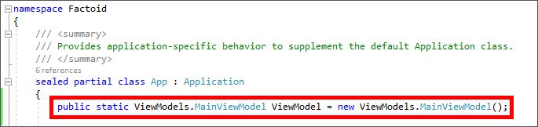
Modifying the App class
-
The Factoid app now contains a model describing the "data" used by the app — in this case, random, interesting facts — and a view-model to drive the user experience. Now it is time to add controls to the main page of the app in order to display those facts. Begin by opening MainPage.xaml and replacing the current contents of the file with the following XAML:
<Page
x:Class="Factoid.MainPage"
xmlns="http://schemas.microsoft.com/winfx/2006/xaml/presentation"
xmlns:x="http://schemas.microsoft.com/winfx/2006/xaml"
xmlns:local="using:Factoid"
xmlns:d="http://schemas.microsoft.com/expression/blend/2008"
xmlns:mc="http://schemas.openxmlformats.org/markup-compatibility/2006"
mc:Ignorable="d">
<Grid Background="{ThemeResource ApplicationPageBackgroundThemeBrush}">
<Grid.RowDefinitions>
<RowDefinition Height="Auto" />
<RowDefinition/>
</Grid.RowDefinitions>
<StackPanel x:Name="headerPanel">
<TextBlock x:Name="titleLabel" Text="Welcome to Factoid" TextWrapping="Wrap"/>
<TextBlock x:Name="subtitleLabel" FontWeight="Light" TextWrapping="Wrap">
<Run Text="Here are a few interesting facts just for you."/>
<LineBreak/>
<Run Text="Select a fact and tap 'Hear' to have the fact read aloud."/>
</TextBlock>
</StackPanel>
<GridView x:Name="mainGridView" SelectionMode="Single" SelectedItem="{Binding CurrentFact, Mode=TwoWay}" Grid.Row="1" ItemsSource="{Binding AllFacts}">
<GridView.ItemTemplate>
<DataTemplate>
<Border RequestedTheme="{Binding IsFavorite, Converter={StaticResource IsFavoriteThemeConverter}}" Background="{Binding IsFavorite, Converter={StaticResource IsFavoriteBackgroundConverter}}" Width="260" Height="200" Margin="5" BorderBrush="DarkGray" BorderThickness="1">
<Grid ToolTipService.ToolTip="{Binding Label}">
<TextBlock TextTrimming="CharacterEllipsis" Style="{ThemeResource SubtitleTextBlockStyle}" FontWeight="Light" HorizontalAlignment="Center" VerticalAlignment="Center" TextAlignment="Center" TextWrapping="Wrap" Margin="20" Text="{Binding Label}"></TextBlock>
</Grid>
</Border>
</DataTemplate>
</GridView.ItemTemplate>
</GridView>
<VisualStateManager.VisualStateGroups>
<VisualStateGroup>
<VisualState x:Name="WideLayout">
<VisualState.StateTriggers>
<AdaptiveTrigger MinWindowWidth="900" />
</VisualState.StateTriggers>
<VisualState.Setters>
<Setter Target="headerPanel.Margin" Value="40,40,40,0" />
<Setter Target="mainGridView.Margin" Value="40,10,40,40" />
<Setter Target="mainGridView.HorizontalAlignment" Value="Stretch" />
<Setter Target="titleLabel.Style" Value="{ThemeResource TitleTextBlockStyle}" />
<Setter Target="subtitleLabel.Style" Value="{ThemeResource SubtitleTextBlockStyle}" />
</VisualState.Setters>
</VisualState>
<VisualState x:Name="NarrowLayout">
<VisualState.StateTriggers>
<AdaptiveTrigger MinWindowWidth="0" />
</VisualState.StateTriggers>
<VisualState.Setters>
<Setter Target="headerPanel.Margin" Value="20,20,20,0" />
<Setter Target="mainGridView.Margin" Value="20" />
<Setter Target="mainGridView.HorizontalAlignment" Value="Center" />
<Setter Target="titleLabel.Style" Value="{ThemeResource SubtitleTextBlockStyle}" />
<Setter Target="subtitleLabel.Style" Value="{ThemeResource BodyTextBlockStyle}" />
</VisualState.Setters>
</VisualState>
</VisualStateGroup>
</VisualStateManager.VisualStateGroups>
</Grid>
</Page> The main page uses UWP's GridView control to display random facts. And it uses visual states and adaptive triggers to implement a user experience that adapts to various device orientations and screen solutions.
-
Open MainPage.xaml.cs. Locate the MainPage class constructor and replace it with the following code:
public MainPage()
{
this.InitializeComponent();
this.Loaded += MainPage_Loaded;
}
private void MainPage_Loaded(object sender, RoutedEventArgs e)
{
App.ViewModel.LoadFactsAsync();
this.DataContext = App.ViewModel;
}Notice the line of code that sets the page's DataContext property equal to the static App.ViewModel property added earlier in this exercise. This is what connects the view to the view-model.
-
In order to build and run UWP apps on a Windows 10 PC, you must enable developer mode on the device. To ensure that developer mode is enabled, click the Windows button (also known as the Start button) in the lower-left corner of the desktop. Then select Settings from the menu and click Update & security in the Settings dialog. Now click For developers on the left and select Developer mode on the right, as shown below.
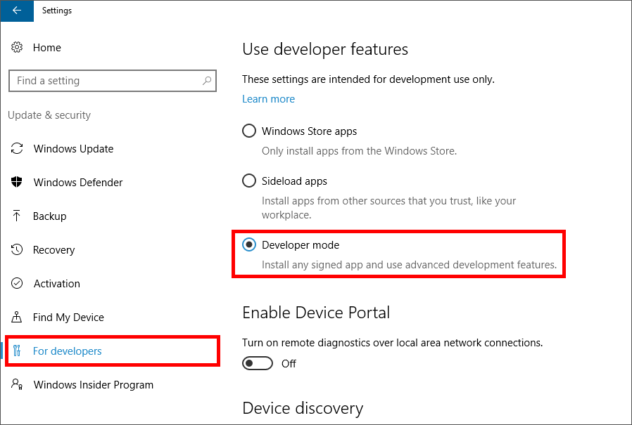
Enabling developer mode in Windows 10
-
Use Visual Studio's Debug -> Start Without Debugging command (or press CTRL+F5) to launch the app.
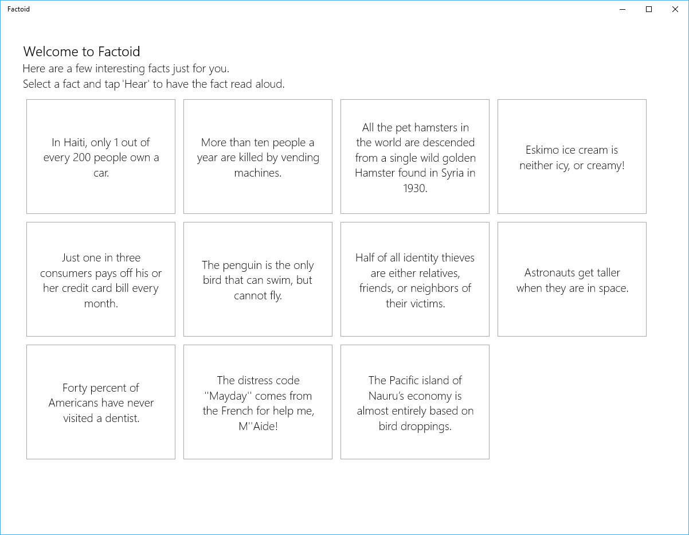
Factoid displaying random, interesting facts
-
Make the Factoid window narrower and notice how the UI adapts.
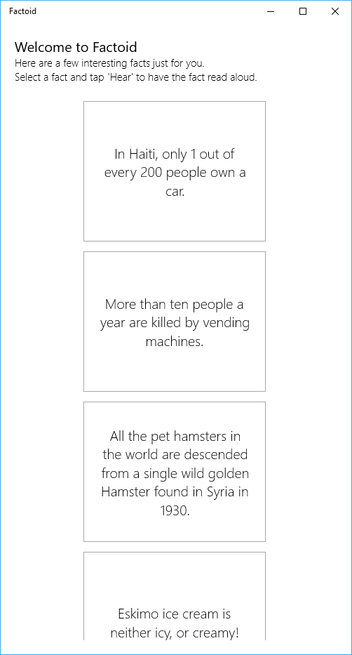
Adaptive layout in action
It's a good start, but right now, the app is as deaf and dumb as the computer that Scotty spoke to in "The Voyage Home." Let's fix that by adding a dose of Cortana.
Exercise 3: Integrate Cortana voice commands
In this exercise, you will modify Factoid to make Cortana aware of it. Afterwards, you will be able to launch Factoid by asking Cortana to tell you an interesting fact. Later, you will take this integration a step further and allow Cortana to tell you interesting facts without displaying Factoid.
-
In Solution Explorer, right-click the Factoid (Universal Windows) project and use the Add -> New Item... command to add an XML file named FactoidVoiceCommands.xml to the project.
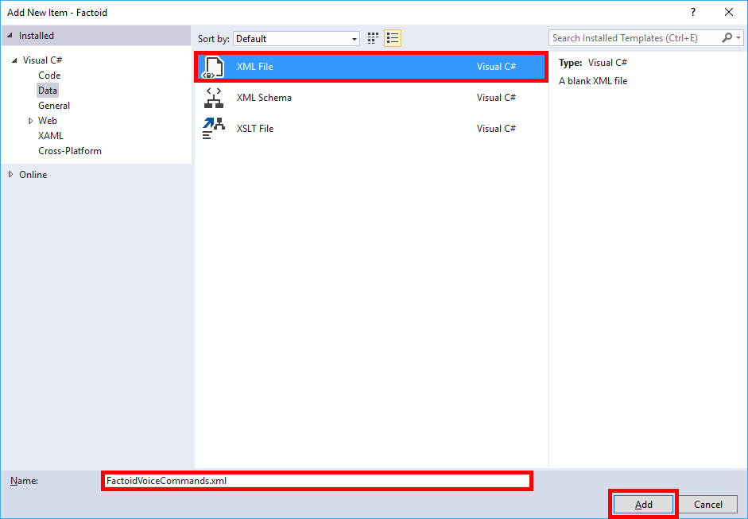
Adding an XML file
-
Add the following XML to the file directly after the opening xml element:
<VoiceCommands xmlns="http://schemas.microsoft.com/voicecommands/1.2">
<CommandSet xml:lang="en-US" Name="FactoidCommandSet_en-us">
<AppName>Factoid</AppName>
<Example>Tell me an interesting fact</Example>
</CommandSet>
</VoiceCommands>Observe the xml:lang="en-US" attribute on the CommandSet element. This attribute defines the command set for devices whose language is set for English (U.S.) and although optional, it is considered a best practice to define command sets on a per-language basis.
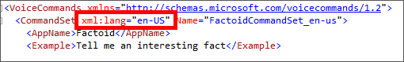
Defining an English command set
-
Add the following command definition after the Example element:
<Command Name="TellMeFactCommand">
<Example>Tell me an interesting fact</Example>
<ListenFor>Tell me [a] [an] [interesting] fact</ListenFor>
<Feedback>Finding you an interesting fact</Feedback>
<Navigate />
</Command>
-
Observe the plain language used in the ListenFor element, complete with words surrounded by square brackets indicating that these words are optional.

The updated voice-command file
-
In Solution Explorer, right-click the "Helpers" folder and use the Add -> Class command to add a class file named SpeechHelper.cs to the folder. Change the scope of the SpeechHelper class by adding the keywords public static to the class definition:
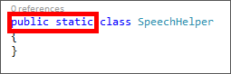
Changing the class scope
-
Add the following using statements to the top of the file:
using Windows.ApplicationModel.VoiceCommands;
using Windows.Storage;
-
Add the following method to the SpeechHelper class to load the voice-command file and pass it to Cortana:
public async static Task InitializeVoiceCommandsAsync(bool updatePhraseLists = true)
{
try
{
StorageFile commandsFile = await Windows.ApplicationModel.Package.Current.InstalledLocation.GetFileAsync(@"FactoidVoiceCommands.xml");
await VoiceCommandDefinitionManager.InstallCommandDefinitionsFromStorageFileAsync(commandsFile);
}
catch (Exception ex)
{
}
return;
}
-
Open App.xaml.cs and add the following statement to the OnLaunched method, making it first statement in that method:
await Helpers.SpeechHelper.InitializeVoiceCommandsAsync();
-
Mark the OnLaunched method as asynchronous by adding the keyword async:
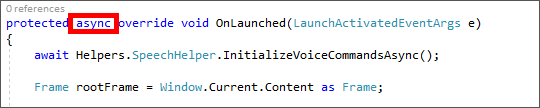
Adding the async keyword
-
Use Visual Studio's Debug -> Start Without Debugging command (or press CTRL+F5) to launch the app.
-
Find Cortana in your PC's task bar (look in the lower-left corner of the desktop) and type "Factoid tell me an interesting fact." Then press Enter.
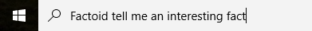
Typing a Cortana command
-
Confirm that Cortana brings Factoid, which is already running, to the foreground.
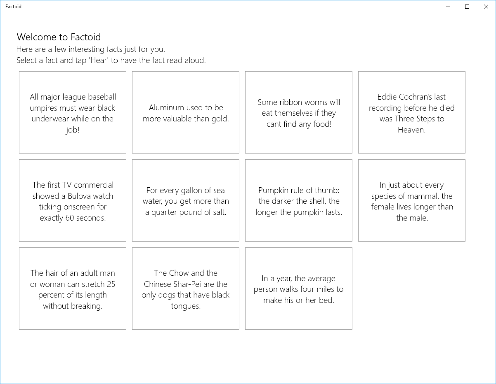
Factoid activated after a hand-off from Cortana
-
If there is a microphone attached to your PC, click the microphone icon next to "Ask me anything" in Cortana and speak the command "Factoid tell me an interesting fact." Confirm that Cortana once more activates the Factoid app.
-
Close Factoid and return to Visual Studio.
So now Cortana understands the command "Factoid tell me an interesting fact" as a command to launch or activate Factoid. That's mildly interesting, but it's only the first step in building a bridge between Cortana and Factoid to allow it do things that are even more interesting.
Exercise 4: Add speech synthesis
The Universal Windows Platform makes it easy to add speech synthesis to your apps. It's a great way to make apps more accessible to users with impaired vision, or to simply provide the convenience of having content read aloud. In this exercise, you will enhance Factoid to read facts to you.
-
Open SpeechHelper.cs in the project's "Helpers" folder. Add the following using statements to the top of the file:
using Windows.UI.Xaml.Controls;
using Windows.Media.SpeechSynthesis;
-
Now add the following method, which uses UWP's SpeechSynthesize class to synthesize speech from text, to the SpeechHelper class:
public async static Task ReadFactAsync(string fact)
{
var synthesizer = new SpeechSynthesizer();
synthesizer.Voice = SpeechSynthesizer.AllVoices.Where(w => w.Gender == VoiceGender.Female && w.Language.Equals(System.Globalization.CultureInfo.CurrentUICulture.Name)).FirstOrDefault();
SpeechSynthesisStream stream = await synthesizer.SynthesizeTextToStreamAsync(fact);
var mediaElement = new MediaElement();
mediaElement.SetSource(stream, stream.ContentType);
mediaElement.Play();
return;
}
-
Open FactInformation.cs in the project's "Models" folder. Add the following property definition after the other properties defined in the FactInformation class:
public ICommand ReadCommand
{
get
{
return new RelayCommand(async () =>
{
await Helpers.SpeechHelper.ReadFactAsync(this.Label);
});
}
}
-
Open MainPage.xaml and insert the following code directly above the opening <Grid> tag to create a CommandBar with an AppBarButton that is connected to the ReadCommand property you added in the previous step:
<Page.BottomAppBar>
<CommandBar RequestedTheme="Dark" Background="#FF298FCC">
<AppBarButton IsEnabled="{Binding CurrentFact, Converter={StaticResource HasContextToEnabledConverter}}" Icon="Microphone" Label="Hear" Command="{Binding CurrentFact.ReadCommand}"/>
</CommandBar>
</Page.BottomAppBar>
-
Use Visual Studio's Debug -> Start Without Debugging command (or press CTRL+F5) to launch Factoid. Click one of the facts to select it, and then click the microphone icon in the app bar. Confirm that the fact you selected is read aloud.
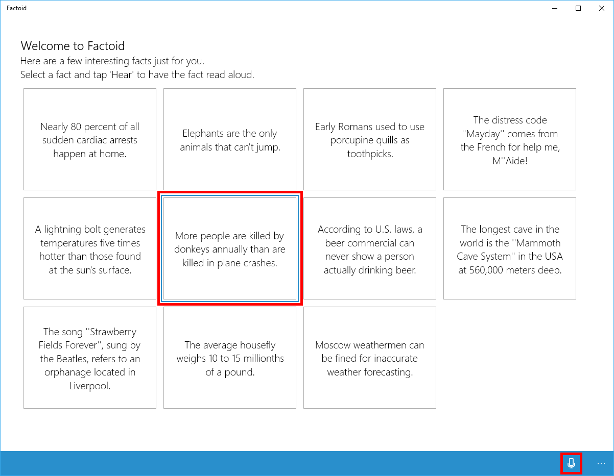
Reading a fact aloud
-
Close Factoid and return to Visual Studio.
There is more than you can do with the SpeechSynthesizer class, including selecting different voices and languages. For more information, refer to https://docs.microsoft.com/en-us/uwp/api/windows.media.speechsynthesis.speechsynthesizer.
Exercise 5: Create a UWP Service
Cortana has powerful speech-recognition capabilities, and your app now incorporates speech synthesis, but how do you tie these together to create a seamless experience, particularly when your app isn’t active? The answer is a UWP app service. An app service is a type of background service that functions somewhat like an old-fashioned Windows service, but that is directly connected to your app. In this exercise, you will add an app service to the solution and update the voice command definition to allow Cortana to display facts retrieved from Factoid without launching the app.
-
In Solution Explorer, right-click the Factoid solution (not the project) and use the Add -> New Project... command to add a Windows Runtime Component (Windows Universal) project named "Factoid.Services.Background" to the solution. When prompted to choose target and minimum platform requirements, accept the defaults and click OK.
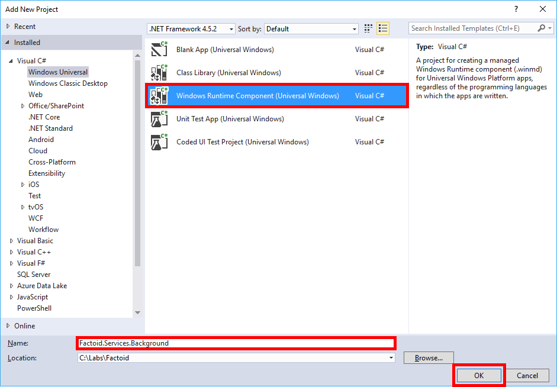
Adding a new project to the solution
-
In Solution Explorer, right-click the Class1.cs file in the new project and use the Rename command to rename the file "GeneralCommandService.cs." When asked if you want to rename all project references, click Yes.
-
Replace the contents of GeneralCommandService.cs with the following code:
using System;
using System.Collections.Generic;
using System.Linq;
using System.Text;
using System.Threading.Tasks;
using Windows.ApplicationModel.AppService;
using Windows.ApplicationModel.Background;
using Windows.ApplicationModel.VoiceCommands;
using Windows.Media.SpeechRecognition;
namespace Factoid.Services.Background
{
public sealed class GeneralCommandService : IBackgroundTask
{
VoiceCommandServiceConnection voiceServiceConnection;
BackgroundTaskDeferral serviceDeferral;
public async void Run(IBackgroundTaskInstance taskInstance)
{
serviceDeferral = taskInstance.GetDeferral();
taskInstance.Canceled += OnTaskCanceled;
var triggerDetails = taskInstance.TriggerDetails as AppServiceTriggerDetails;
try
{
voiceServiceConnection = VoiceCommandServiceConnection.FromAppServiceTriggerDetails(triggerDetails);
voiceServiceConnection.VoiceCommandCompleted += OnVoiceCommandCompleted;
VoiceCommand voiceCommand = await voiceServiceConnection.GetVoiceCommandAsync();
var interpretation = voiceCommand.SpeechRecognitionResult.SemanticInterpretation;
await ProcessGenerateFactAsync(interpretation);
this.serviceDeferral.Complete();
}
catch (Exception ex)
{
}
}
private async Task ProcessGenerateFactAsync(SpeechRecognitionSemanticInterpretation interpretation)
{
await Helpers.ProgressHelper.ShowProgressScreenAsync(voiceServiceConnection, "Okay, get ready...");
string fact = await Helpers.FactHelper.GetFactAsync();
var destinationsContentTiles = new List<VoiceCommandContentTile>();
var destinationTile = new VoiceCommandContentTile();
try
{
destinationTile.ContentTileType = VoiceCommandContentTileType.TitleWithText;
destinationTile.AppContext = null;
destinationTile.AppLaunchArgument = "fact=" + fact;
destinationTile.Title = fact;
destinationTile.TextLine1 = "";
destinationTile.TextLine1 = "(tap to add to favorites)";
destinationsContentTiles.Add(destinationTile);
}
catch (Exception ex)
{
}
VoiceCommandResponse response = VoiceCommandResponse.CreateResponse(new VoiceCommandUserMessage()
{
DisplayMessage = "Did you know...",
SpokenMessage = fact
}, destinationsContentTiles);
await voiceServiceConnection.ReportSuccessAsync(response);
}
private void OnVoiceCommandCompleted(VoiceCommandServiceConnection sender, VoiceCommandCompletedEventArgs args)
{
if (this.serviceDeferral != null)
{
this.serviceDeferral.Complete();
}
}
private void OnTaskCanceled(IBackgroundTaskInstance sender, BackgroundTaskCancellationReason reason)
{
if (this.serviceDeferral != null)
{
this.serviceDeferral.Complete();
}
}
}
}
-
Right-click the Factoid.Services.Background (Windows Universal) project and use the Add -> New Folder command to add a folder named "Helpers" to the project.
-
Right-click the "Helpers" folder and select Add -> Existing Item.... Browse to the "Resources\Helpers" folder included with this lab, select all of the files in that folder, and click Add to import the files into the project's "Helpers" folder.
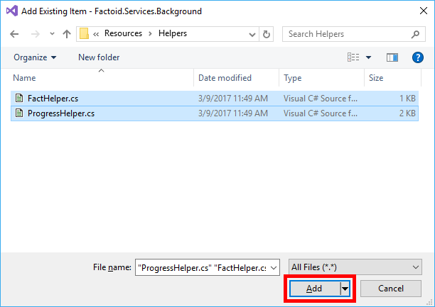
Importing files into the "Helpers" folder
-
Right-click the Factoid.Services.Background (Universal Windows) project and select Manage NuGet Packages.... Make sure Browse is selected in the NuGet Package Manager. Then select the Newtonsoft.Json package and click Install to install the latest stable version. If prompted to review changes, click OK.
Installing JSON.NET
-
Right-click References in the Factoid (Universal Windows) project, and select Add Reference.
-
Click Solution under Projects to list the other projects in the solution, and check the box next to Factoid.Services.Background. Then click OK to add a reference to that project.
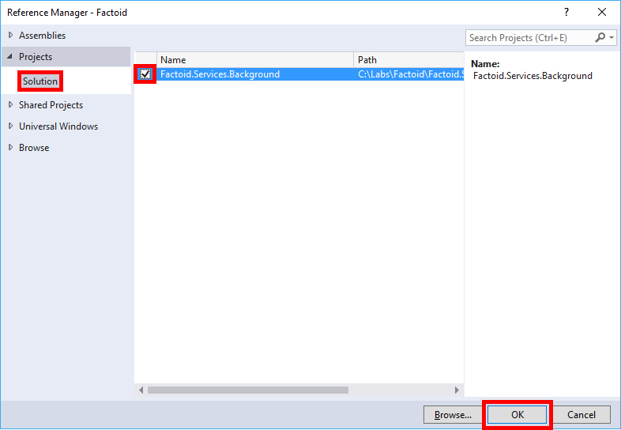
Adding a reference to Factoid.Services.Background
-
Open Package.appxmanifest in the Factoid (Universal Windows) project and select the Declarations tab.
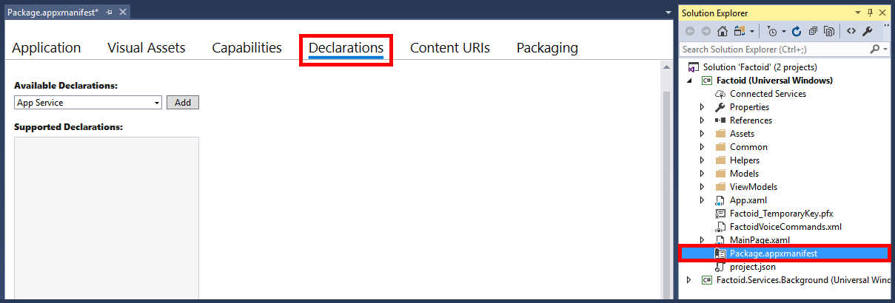
Opening the manifest
-
Select App Service from the Available Declarations list and click Add. Type "GeneralCommandService" into the Name box and "Factoid.Services.Background.GeneralCommandService" into the Entry point box. Then press Ctrl+S to save your changes.
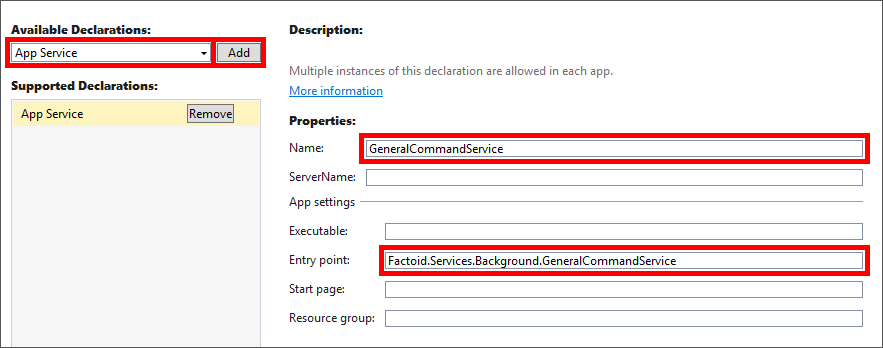
Adding an App Service declaration
-
Open FactoidVoiceCommands.xml and replace the empty Navigate element with the following element:
<VoiceCommandService Target="GeneralCommandService"/>
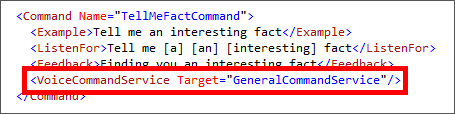
Replacing the Navigate element
The new element instructs Cortana to invoke the voice-command service named "GeneralCommandService" when she recognizes input matching the ListenFor phrase.
-
Use Visual Studio's Debug -> Start Without Debugging (or press Ctrl+F5) launch Factoid. Once Factoid is up and running, close it.
-
To make sure Cortana doesn't cache old commands, bring up the Windows Task Manager, select Cortana in the list of background tasks, and click the End task button to end the Cortana process. Then close Task Manager.
Stopping Cortana this way is not always necessary, but it is a good habit to get into while testing abd debugging to make sure Cortana is starting with a "clean slate" of commands.
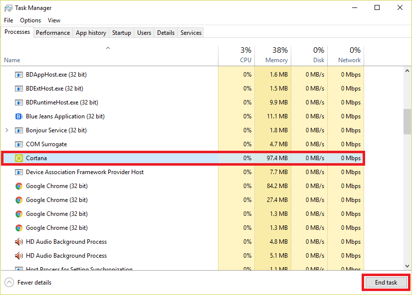
Ending the Cortana process
-
Go to Cortana in your PC's task bar and issue the command "Factoid tell me an interesting fact," either by typing it or voicing it.
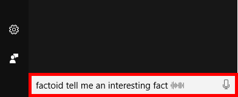
Issuing a command to Cortana
-
Confirm that Cortana displays an interesting fact like the one below. Note that the fact came from Factoid, not from Cortana herself.
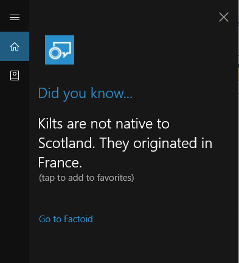
Cortana displaying a fact obtained from Factoid
Now that Factoid is more tightly integrated with Cortana, the final step to incorporate Cortana "Personal Assistant" actions.
Exercise 6: Add Personal Assistant actions
One of the lesser-known but more powerful aspects of Cortana is the notion of "Personal Assistant" actions. In general, this means Cortana can be given permission to send information to your app through an app service running in the background, and then activate the app itself after the app service has executed. In this exercise, you will enhance Factoid so that facts presented in Cortana can be "favorited" by the user, and will then appear as favorites in Factoid itself and even appear on the app's tile.
-
In Solution Explorer, right-click Package.appxmanifest and select View Code. If prompted with a dialog stating that Package.appxmanifest is already open and asking if you want to close it, click Yes.
-
Locate the closing </Extensions> tag and add the following statement just above it:
<uap:Extension Category="windows.personalAssistantLaunch"/>
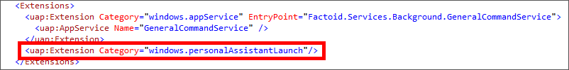
Modifying Package.appxmanifest
-
Right-click the "Helpers" folder in the Factoid (Universal Windows) project and use the Add -> Existing Item... command to import all of the files in the "Resources\PersonalAssistant\Helpers" folder included with this lab.
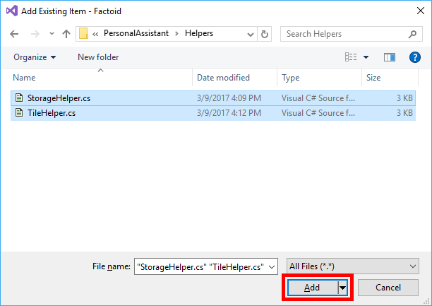
Importing files into the "Helpers" folder
-
Open MainViewModel.cs in the "ViewModels" folder and add the following statements to the beginning of the LoadFactsAsync method:
Be careful to add them to LoadFactsAsync (plural), not LoadFactAsync, because the MainViewModel class contains both.
var favorites = await Helpers.StorageHelper.GetFavoritesAsync();
foreach (var favorite in favorites)
{
this.AllFacts.Add(favorite);
}
-
Open FactInformation.cs in the "Models" folder and add the following statements above the ReadCommand property. These new commands enable facts to be marked as favorites. They also enable facts to be displayed on the app's tile when the tile is pinned to the Windows start screen.
public ICommand ToggleFavoriteCommand
{
get
{
return new RelayCommand(async () =>
{
this.IsFavorite = !this.IsFavorite;
if (this.IsFavorite)
{
await Helpers.StorageHelper.SaveFavoriteAsync(this);
Helpers.TileHelper.PinFact(App.ViewModel.CurrentFact.Label);
}
else
{
await Helpers.StorageHelper.RemoteFavoriteAsync(this);
}
});
}
}
public ICommand AddToFavoritesCommand
{
get
{
return new RelayCommand(async () =>
{
if (App.ViewModel != null) App.ViewModel.AllFacts.Insert(0, this);
await Helpers.StorageHelper.SaveFavoriteAsync(this);
App.ViewModel.CurrentFact = this;
Helpers.TileHelper.PinFact(App.ViewModel.CurrentFact.Label);
});
}
}
-
Open MainPage.xaml and insert the following statement just before the existing AppBarButton declaration near the top of the file:
<AppBarButton IsEnabled="{Binding CurrentFact, Converter={StaticResource HasContextToEnabledConverter}}" Icon="{Binding CurrentFact.IsFavorite, Converter={StaticResource FavoriteSymbolConverter}}" Label="{Binding CurrentFact.IsFavorite, Converter={StaticResource FavoriteLabelConverter}}" Command="{Binding CurrentFact.ToggleFavoriteCommand}"/>
-
Finally, open App.xaml.cs and insert the following methods after the App constructor:
protected async override void OnActivated(IActivatedEventArgs args)
{
var activator = args as Windows.ApplicationModel.Activation.ProtocolActivatedEventArgs;
if (activator != null)
{
var parameters = (args as Windows.ApplicationModel.Activation.ProtocolActivatedEventArgs).Uri.Query;
string content = Uri.UnescapeDataString(parameters).Split('=').Last();
Models.FactInformation fact = new Models.FactInformation()
{
Id = Guid.NewGuid(),
IsFavorite = true,
Label = content,
};
fact.AddToFavoritesCommand.Execute(null);
}
await EnsurePageCreatedAndActivateAsync();
}
private async System.Threading.Tasks.Task EnsurePageCreatedAndActivateAsync()
{
await Helpers.SpeechHelper.InitializeVoiceCommandsAsync();
if (Window.Current.Content == null)
{
Window.Current.Content = new MainPage();
}
Window.Current.Activate();
}The first of these two methods overrides the OnActivated method so Factoid can respond to commands from Cortana.
-
Use Visual Studio's Debug -> Start Without Debugging command (or press CTRL+F5) to launch Factoid.
-
Go to Cortana in your PC's task bar and issue the command "Factoid tell me an interesting fact," either by typing it or voicing it.
Issuing a command to Cortana
-
Wait until a fact is displayed, and then click (or tap) it.
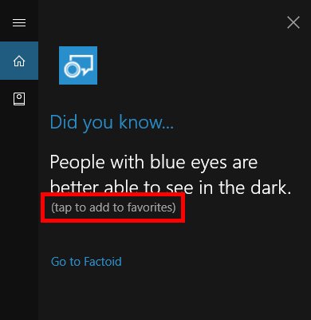
Adding a fact to favorites
-
Confirm that the fact you favorited appears in Factoid.
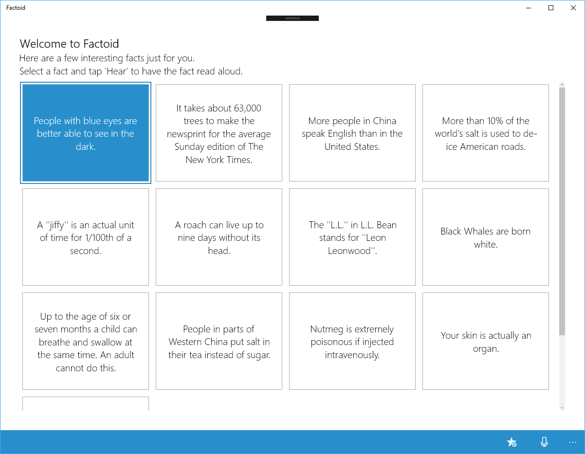
Factoid displaying a fact favorited in Cortana
-
If you decide that you don't want the fact treated as a favorite any longer, simply tap the Favorite button that now appears in the app bar:
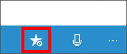
Unfavoriting a fact
-
Select a different fact in the app and tap the Favorite button to mark it as a favorite.
-
Pin Factoid to the start screen to create a tile for it. Find the tile and confirm that the facts you selected as favorites appear on the tile. (If you favorited more than one fact, the fact displayed on the tile will rotate from time to time.)
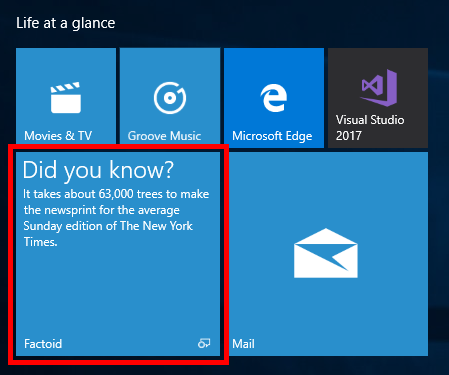
Factoid facts displaying on the Start Screen
Each time you start the app, it will display any favorites you have selected and fill in the remaining slots with randomly selected facts. Use the Favorite button to favorite and unfavorite facts as desired and control what appears on the app's tile.
Summary
In this hands-on lab you learned how to:
- Create a Universal Windows Platform (UWP) app
- Integrate Cortana voice commands
- Incorporate speech synthesis
- Create a UWP service
- Utilize Cortana's "Personal Assistant" capabilities in an app
You can build some amazing apps when you combine the rich capabilities of the Universal Windows Platform with the features of Cortana. For additional information and to see more cool things you can do when you combine UWP with Cortana, watch the video at https://channel9.msdn.com/Shows/Visual-Studio-Toolbox/App-Development-with-Cortana.
Copyright 2017 Microsoft Corporation. All rights reserved. Except where otherwise noted, these materials are licensed under the terms of the MIT License. You may use them according to the license as is most appropriate for your project. The terms of this license can be found at https://opensource.org/licenses/MIT.